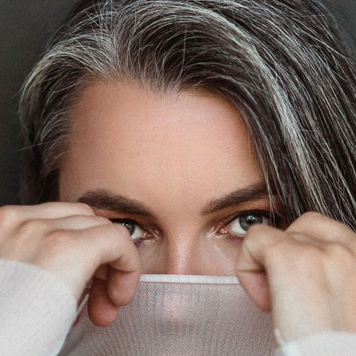

Denize Lapinska
Rīga
15+ gadi restorānu biznesā.
Pēc 40 izvēlējos sevi, nevis darbu.
Mans skapis · izpārdošana
👗Mans skapis – izpārdošana YagāMantas, kas gaida jaunu saimnieci→ 👗Mans skapis VintedVēl vairāk lietu→Mans restorāns · Cepiens
☕Mans restorāns – CepiensMeža iela 4A, Āgenskalns · ēdienkarte→ 🥂Pasūti crostini mazajiem svētkiemRaksti Cepiens Instagram DM→ 🍞Apskati crostiniKā tie izskatās→ 📸Cepiens Instagram@cepiens→Telegram
🤍Mana Telegram kopienaMana diena bez filtriem→